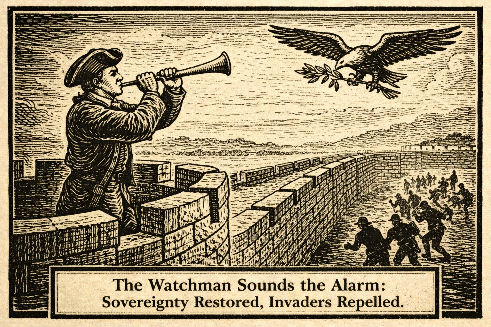
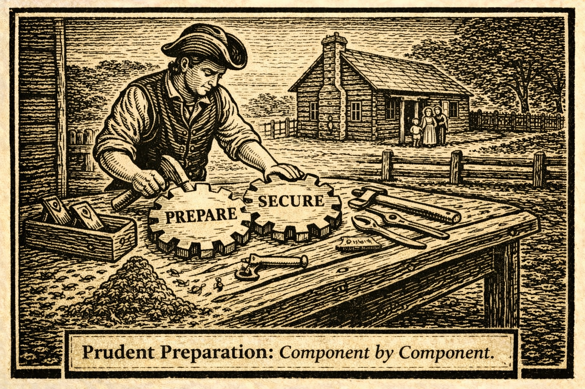
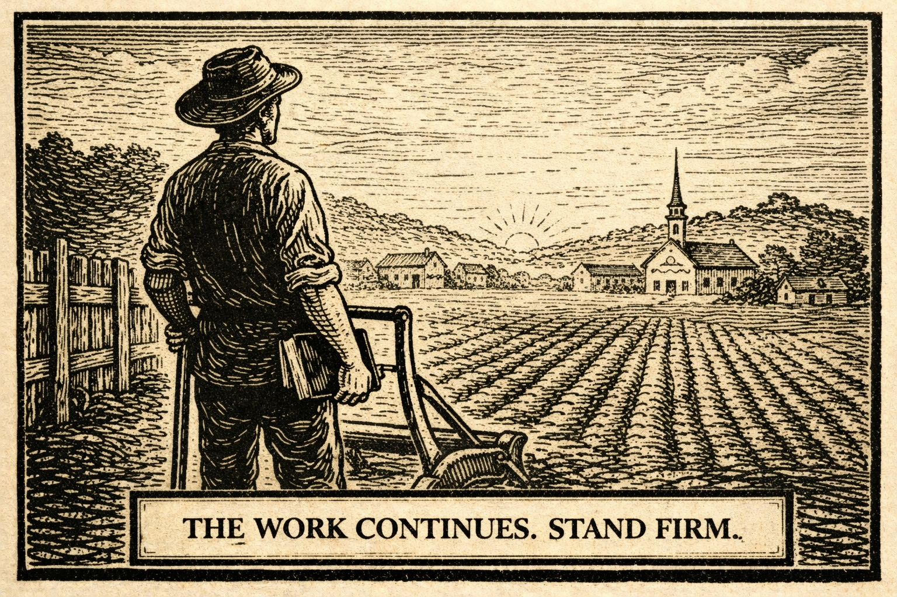

Edition: January 23, 2026
Opening Dispatch
By The Watchman
What foolishness is at work here—that after one full year of restored sovereignty, with illegal invasions slashed by over ninety percent and criminal aliens fleeing or removed in record numbers, certain voices still shriek that securing our God-given borders is "cruel"?
The king's heart is in the hand of the Lord, and He has turned it toward justice at last. Yet elites and their mouthpieces cling to open-border idolatry, decrying mass deportations that have saved countless American lives from violence and chaos.
They call evil good—shielding rapists and murderers while American families suffer the consequences of past treachery. God grants no tyrant or globalist the right to flood our nation with lawlessness.
One year in, the proof is undeniable: enforcement works, safety returns, prosperity beckons. But the battle rages, as holdouts in courts and cities defy the people's mandate.
Read on, patriots, as we expose the lingering hypocrisy in The Plain Truth and celebrate hard-won victories. Stand firm—America First, rooted in faith, points ever to Christ and action.

The Plain Truth
By The Watchman

What madness is this—that after a year of triumphant enforcement, with crossings plummeted ninety percent and over two million aliens self-deported or removed, the chattering class still wails about "inhumanity"?
The plain truth stares us in the face: mass deportation was never impossible—it was sabotaged by traitors within.
Under weak leadership, elites flooded the nation with chaos, esteeming illegal invaders above citizens. Now, with bold action—stipends for voluntary exit, public databases naming the wicked, ICE flooding zones of resistance—the tide has turned.
God-given rights demand we protect our own first. Yet holdout judges block removals, and media liars paint criminals as victims.
What arrogance—to call evil good while American blood spills from preventable crimes!
Secure the borders fully, deport without apology, restore prosperity now. The Lord directs the hearts of leaders; pray He hardens them against globalist lies.
Rise, patriots—support enforcement, demand accountability, turn to Christ for national revival.
Prophetic Parallels
By The Old Prophet
Stand ye in the ways, and see, and ask for the old paths, where is the good way, and walk therein, and ye shall find rest for your souls.
Thus echoes Jeremiah's plea, yet the people replied, "We will not walk therein." So it is today, one year into restored border sovereignty.
Isaiah 5:20 Woe unto them that call evil good, and good evil; that put darkness for light, and light for darkness.
In context, Isaiah warned a decadent Israel inverting justice—acquitting the guilty for bribes, depriving the innocent of rights.
Psychologically and spiritually, this reveals the chaos of abandoning order: when nations forsake divine bounds (as in Acts 17:26, God setting habitation limits), idolatry follows—here, worship of "compassion" without righteousness.
Modern woes mirror this: critics invert truth, naming enforcement "darkness" while past open borders brought violence and disorder. Yet hope glimmers—realignment with old paths of law, responsibility, and faith brings rest.
Return to the Living God through Christ; repent of inverted morality; revive family and nation in biblical order.
Victory Reports
By The Steadfast Defender
Fellow patriots, the future of America rests in disciplined action—and this past year proves truth prevails when we mobilize with vigor!
Consider the triumphs: illegal crossings slashed over 90%, the most secure border in history. ICE removed hundreds of thousands of criminal aliens, while millions self-deported under wise incentives. No catch-and-release—public safety restored!
Grassroots activism forced accountability; courts upheld enforcement against feeble challenges. Energy independence surges, families safer—evidence of God's sovereignty blessing self-reliance.
The irony? Critics who decried "impossible" now squirm as their absurd retreats expose emptiness. Mobilize youth: educate on these wins, defend virtues with faith-fueled energy. The republic endures when we act!
Sentinel's Roast
By The Sentinel
The irony is thick as sanctuary holdouts clutch pearls over "humane" deportations—after years screaming "diversity" while shielding rapists and gang members from justice.
Absurdity reigns: mayors who welcomed chaos now whine about consequences, as if American victims don't count in their exalted "compassion."
Exaggerated contrasts abound—elites lock arms protecting fugitives abroad while lecturing heartland families on morality.
Logical breakdown: if enforcement is "cruel," what of crimes enabled by defiance? Reclaim sovereignty with wit and truth—God demands order, not inversion. Roast the hypocrites; rally to finish the wall!
The Common Man's Counsel
A reader submits: "My wife has been distant lately—stressed from work, kids, household burdens, and feeling unappreciated despite my efforts. As a working man trying to provide, how can I protect our marriage and woo her back to closeness?" – Submitted anonymously
Brother, draw from history's lessons—Jefferson cherished family as the bedrock of liberty, and founders built strong homes amid trials through faith, duty, and deliberate care. In our time, wives often bear heavy loads: emotional labor, endless tasks, feeling unseen while husbands chase provision. This strains the heartland home, where biblical marriage demands husbands lead with sacrificial love.
The Scripture commands plainly: Husbands, love your wives, even as Christ also loved the church, and gave himself for it (Ephesians 5:25, KJV). This is no sentiment—it's action: nourish, cherish, sanctify her as your own body. Husbands, love your wives, and be not bitter against them (Colossians 3:19, KJV). Avoid harshness; pursue with gentleness.
Plain steps to woo her and rebuild:
- Listen first, without fixing—dwell with her according to knowledge (1 Peter 3:7). Set aside phone and time daily; ask about her day, feelings, burdens. Hear to understand, not respond. This honors her as co-heir of grace.
- Lighten her load through acts of service—wash dishes unasked, handle bedtime routines, run errands. Christ washed feet; emulate by serving without score-keeping. Small, consistent helps show you see her efforts.
- Speak words that affirm—tell her she's beautiful, valued, strong. Compliment specifics: her patience with kids, her wisdom, her smile. Leave notes or texts: "I love how you make our home a refuge." Words nourish the heart like bread.
- Pursue romance deliberately—plan simple dates: walk together, hold hands, recall early days. Surprise with flowers or her favorite treat. Dance in the kitchen. Touch tenderly—hugs, back rubs—without expectation. Woo as if courting anew; marriage thrives on pursuit.
/li>
- Pray together and for her—lead family devotion, thank God for her, ask His strength over her stresses. Stand on unalienable rights to a God-honoring home; pray daily for unity, that bitterness flees and love deepens.
Prioritize heartland values—self-reliance in provision, but family bedrock under God means sacrificial cherishing. Your marriage is the first line of defense against cultural decay. Act in faith: woo her persistently, as Christ pursues the church.
Fellow patriots, send anonymous counsel via site—no burden too great. Act in faith.
Seek Counsel from The Watchman
Fellow patriots, have you a question weighing on your mind? A
dilemma that vexes your household, a concern for your trade, or a
matter of principle that demands counsel? The Watchman stands
ready to answer. Send your question—your name, your trade, your
concern—and we shall address it with the same plain truth and
practical wisdom that built this republic. No question too small,
no burden too great.
Submit Your Question Here
Practical Self-Reliance Corner
By The Frontier Builder

Current enforcement triumphs reduce risks, but lingering resistance demands prudent preparation—break it into testable components.
- Map local networks: Identify cooperating law enforcement; build community alliances—iterate with meetings.
- Home fortress basics: Reinforce entry points, inventory supplies—test with drills.
- Skill iteration: Learn basic defense/trade skills via free resources; data shows prepared households thrive.
- Economic hacks: Localize spending, side ventures against instability.
- Digital vigilance: Monitor public deportation databases; report suspicions securely.
- Family resilience: Teach responsibility—data proves strong units weather chaos.
Experiment boldly—self-reliance honors faith-based duty.
Proverbs 27:12, KJV A prudent man foreseeth the evil, and hideth himself: but the simple pass on, and are punished.
Prayer of the Week & Closing Call
Heavenly Father, Sovereign Lord who sets the bounds of nations and turns the hearts of kings,
We thank You for one year of restored order—borders secured, innocents protected, truth prevailing over lies. Forgive our nation's past drift; expose lingering hypocrisy inverting justice.
Grant wisdom to leaders enforcing righteousness; strengthen families amid resistance; awaken the complacent to action rooted in faith.
Point us ever to Christ, our true security.
In Jesus' name, Amen.
Actions this week:
- Thank President Trump/DHS for enforcement wins—share victories.
- Report suspicions securely to ICE; support cooperating locals.
- Pray daily for full sovereignty restoration.
- Organize community vigilance—train families in prudence.
- Submit anonymous counsel securely—no fear, patriots; the Watchman stands ready.
Fellow patriots, share burdens at watchmanscry.site/submit. Awaken the complacent, anger the wicked, equip the faithful—point to Christ.
